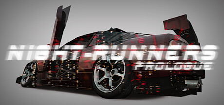
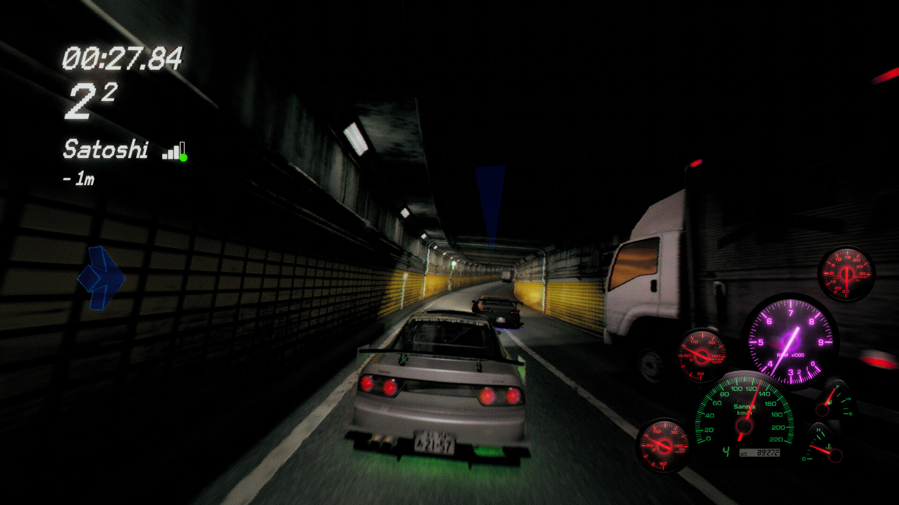

Нелегальные уличные гонки
Заезды один на один проходят ночью. Перед гонкой можно договориться о ставке с соперником.
ФАН-САЙТ ПО ИГРЕ
Ночные улицы Японии, уличные гонки, ставки и большое количество деталей для автомобиля. Здесь собрана основная информация об игре.
Узнать об игре
Заезды один на один проходят ночью. Перед гонкой можно договориться о ставке с соперником.
Можно менять внешний вид, колёса, увеличивать мощность двигателя, салон и элементы, влияющие на управление.
Парковки, гаражи, тёмные трассы, трафик, визуальный стиль японской автомобильной культуры. Где весь геймплей сопровождается эффектом VHS камеры

Этот сайт является небольшой фан-базой по игре NIGHT-RUNNERS: PROLOGUE. На страницах можно прочитать об основных механиках, тюнинге и посмотреть изображения из игры.
NIGHT-RUNNERS: PROLOGUE выпущена студией PLANET JEM 23 февраля 2024 года. Игра распространяется бесплатно в Steam.